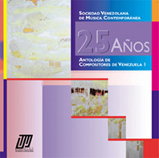

|
|  |
|
Para hacer su pedido del disco compacto "25 Años," favor dirigirse a la Sra. Luisa, Secretaria de la Maestría en Música,
| Diana Arismendi | Ave Mías | 1997 | Pfte. | 11'37 |
| Alfredo Marcano Adrianza | Urano | 1982 | Orch. | 6'51 |
| Federico Ruiz | Ave María | 1991 | 4 Voc., Pfte. | 5'49 |
| Adina Izarra | Silencios | 1989 | Guit. | 12'21 |
| Josefina P. de Benedetti | Palabreo | 1989 | Coro mix. | 6'00 |
| Emilio Mendoza | Velorio Ritual | 1992 | Cla. Bas., Vc., Pfte. | 9'03 |
| Alfredo Rugeles | Camino entre lo sutil e inerrante | 1979 | Orch. Sinf. | 8'57 |